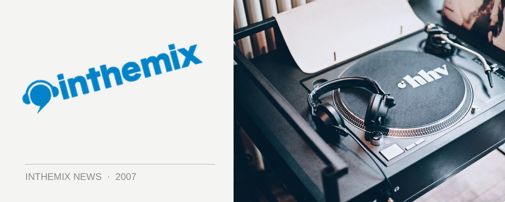

Robyn says konichiwa Australia!
Konichiwa! Modular is busting to announce that Robyn will be in the country next week to play a couple of intimate club shows on top of releasing her Konichiwa Bitches/Cobrastyle double A-side single on September 15. Robyn will be kicking out pop gem after pop gem live with her full band next weekend. Yes, next weekend!
The saucy songstress has gone #1 in the UK for the first time since Show Me Love happened somewhere in the pop Bermuda Triangle of the mid-90s. Her whirlwind tour of Australia from September 12 to 17 is doubling as a trip to promote her new single and album. Her spectacular self-titled album is then due to expand minds and move booties on October 6.
Tickets go on sale tomorrow, Friday September 7 via modularpeople.com. Konichiwa Bitches/Cobrastyle is out on September 15. Robyn will make her official label debut on Modular with her self-titled album release on October 6.
‘A Night With Robyn’ for two nights only – proudly presented by Modular.
Friday September 14 – Oxford Art Factory (Sydney)
Sunday September 16 – Miss Libertines (Melbourne)